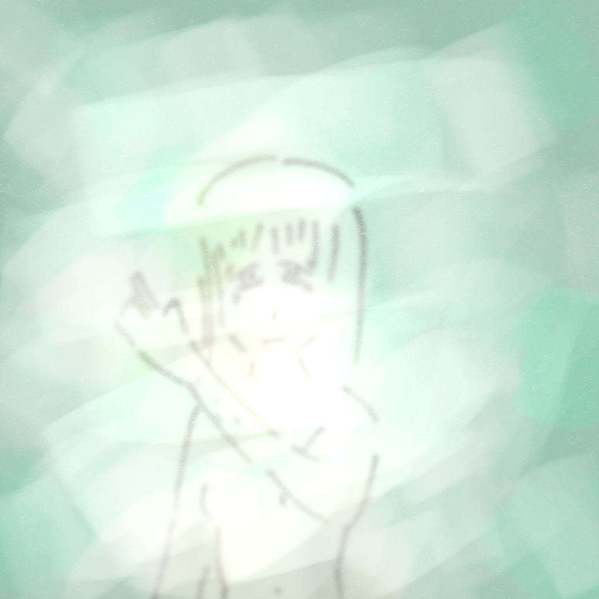
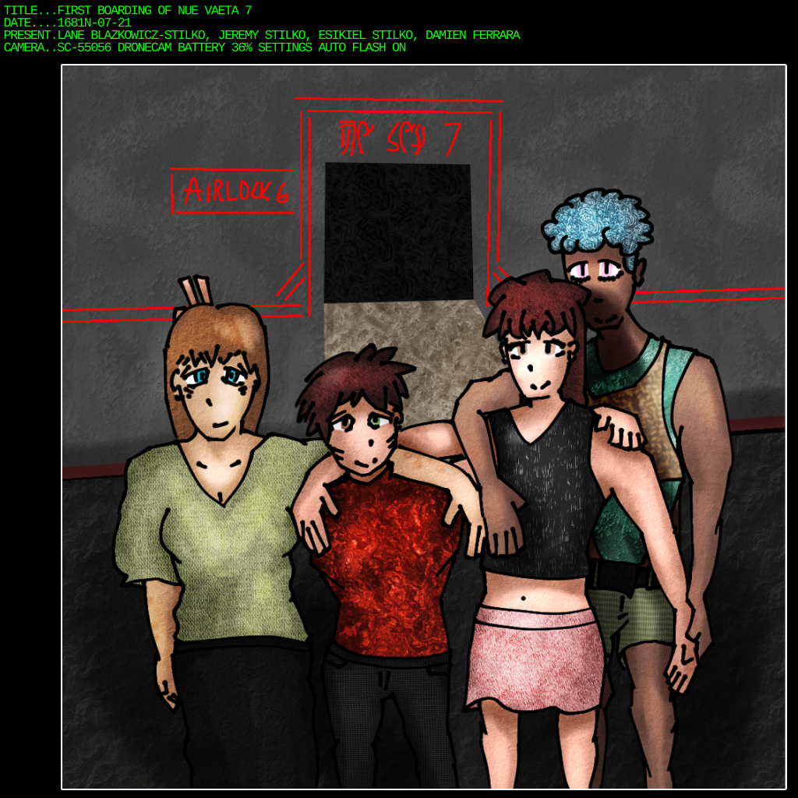
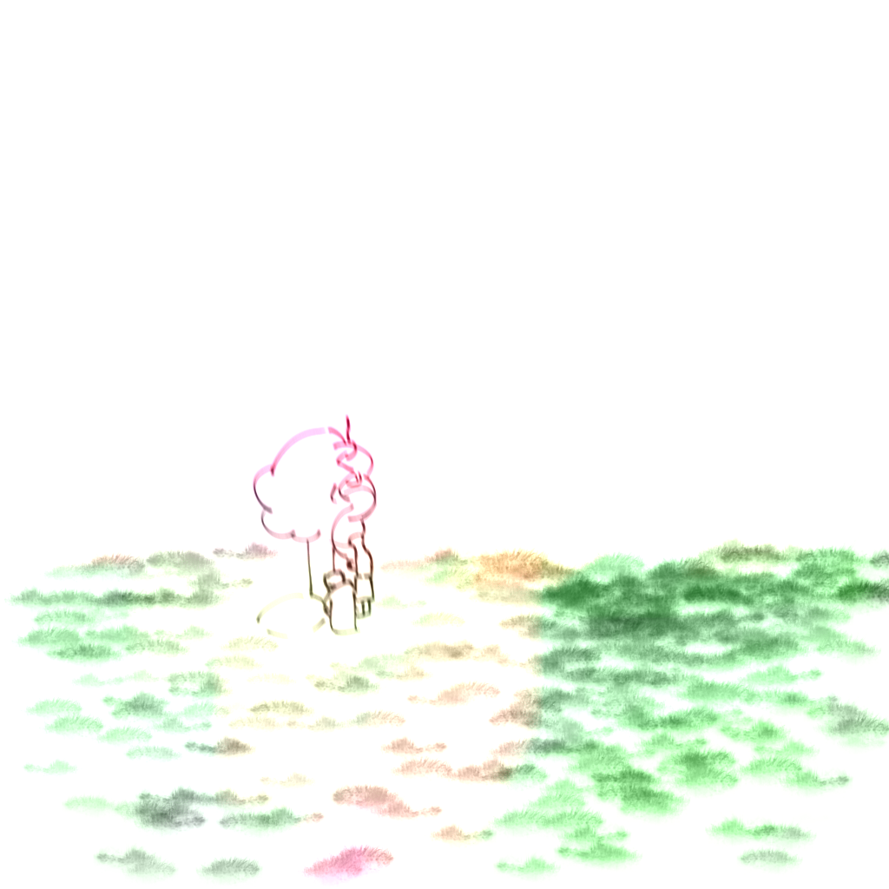

I uh, haven't posted on Tmblr for, what, 7 years? It's felt like longer, and also shorter. It always feels like five years ago you were a different person, and then you realize you're not even the same kind of person you were then. "No, I'm not conservative anymore, I'm 27, not 21! Yeah, in five years I'll be just the way I am right now. I'm at the azimuth of self-actualization! No more changes from here on."
In the time since the Hell Incident, I've been thinking about gender a lot. Yeah, you know where I'm going with this already, but just hear me out. It's been, what, over two fucking thousand years since queer liberation? It took them hundreds of years after the "Second Coming of the Roaring Twenties," just like people with skin differences were. Yes, I have been reading into history and none of you can stop me from dumping every thought I have onto a website barely anyone even pays attention to anymore.
Yes, them, the queers. I'm not like that. Straight edge straight man I am. At least queer people don't get randomly killed anymore, but we're a thousand years into reform over reform and I'm starting to think I'm losing my religion. After all, I did go to Hell! Ha ha ha.
At least corporations are rigidly controlled by the Federation. At least people with disabilities get exemptions. At least we aren't the kind of people we were 2600 years ago. There's a lot I learned from history that came hitting me in the face right here in the present. I wish I had seen it sooner in myself. I'm too old to get government support for transitioning. I'm 34 in a few months. The subsidiary keeping me afloat dispersed when the province government found them laundering more money than I could ever comprehend existing.
I know I'm putting way more info about myself online than I should. It's fine, just keep reading. Anyways. I'm not even close to broke, wouldn't be for my whole natural life, but also, I've got no income. I'm not visibly disabled, so I should be working. Not a veteran, too dangerous for that. Trauma's a bitch, but I've already argued in court to no avail that it's too much of a bitch for me to hold a job. So now I'm stuck here, a woman, with only enough money for, what, 10 years on hormone therapy? If I don't spend any of it, y'know, eating. Can't work, but can't get any kind of benefit that would let me keep going. I'm an honorary criminal.
My partner passed away last month. I'd been with them for 3 years. About as long as I knew I was queer. My parents and their parents took the last few years to all die. Nobody to pass on my blood, I've never been interested. So many of my friends are gone.
I am going to kill myself. Right now, I'm scared. I know this feeling will not pass, I know that I'm stuck in a hole, I know I could probably get out if I tried. I'm losing my fucking mind because everyone around me is dying and I am not the person I was 5 years ago. I am not the person I was five years ago.
I'll keep living, so please, don't send me DMs. -Lane
I'm still awake.
I'm not really sure why.
I reach back to the darkness I felt years ago, when I had nothing. When it was all taken from me. I resent all the people that brought me here. I resent how much I hurt myself. I kept living. I needed to. So I had to keep feeling that I was alive.
I'm lost within myself. So I reach back into the dark. It doesn't let go. Into the pit! Into the pit!
Every time I spiral these days all I can think is how much of a farce it is. It's like my mind just wants me to never be happy. I'm lying here in bed, just fine, wanting to fucking kill myself. Ostensibly nothing is wrong. I can pick myself up, right?
Fuck this. I'm getting up.
I get up. I go to the kitchen. I don't know what time it is anymore. I look at the clock, but it just looks like random shapes. I've got my pack of cigarettes, smoking them one after the other. It's really dark in here. Each one I put out on myself. I keep thinking of Min. I really do wonder what time it is at this point.
After a seemingly infinite set of cigarettes, I realize I'm out. Looks like this was a fresh pack, too. Weird. Don't remember opening one. Whatever.
I look at the clock. It's 5 in the morning. Kinda wonder when Rick is gonna wake up.
Hey y'all, I'm sorry for the post I made 2 days ago. I deleted it. I spent yesterday in a hospital. My landlord saw my whole spiral and thought I was insane, so he called the cops on me. I hurt myself a lot. My skin is deformed from burns, more so than normal for someone who went to war. I get really high to try and dull the pain. I keep doing it. Nobody noticed. Not until I went and said how I felt.
Ultimately none of this really matters. I hurt myself and I hope someone will reach out and help me, but I'm just deeper in this pit still. I get high to pass my time and hope something will change. I'm stuck in the cracks.
Looking for a place to stay now. Please reach out if you're in the Province of New York. -Lane
Didn't think I'd ever be in a hotel again. Places like this are where my kind always end up. It's all I deserve. Not like I can say that for the kid that got kicked out of zir house for being queer living next to me. Maybe for the skin-head on the other side of the building, but I don't think he even deserves a place as safe as this.
... Mmm. At least I'm not that guy, I guess. Being me isn't much better though.
I imagine one day I'll have my head caved in the vending machine out front. Probably thanks to that guy.
Half a year is a long time, it feels like.
It's been a while since I was put in the hospital. Even longer since I was in the hospital for my debrief and equipment removal. It's been 5 months since I met Jeremy, and a week since we became partners. He came to me after someone who used to run OFMD notified him that I existed. This guy, Quinton, was apparently aware of AOF's operations in Hell and tracked Jeremy throughout his escape before me. Part of the reason the company collapsed. He... saw what I wrote, and arranged to find Jeremy.
I'm still confused. My outlook on life hasn't really changed, but I at least know that I'm safe in the world now. I'm cared for. Even if I was to dip into a gutter I would be pulled back up. You know what I mean?
Apparently, he's built an entire life here. He found every single survivor of the raids so many years ago, and accounted for every one who was lost. It's peaceful here on Delsona, certainly nothing like NY. I wish I were here earlier. Not just this place, but this life. I wish this was what I had growing up.
In a way, now I'm finally growing up, after 34 years of living. I hate this thought.
The Mage — no, Jeremy stands before me. I finally admit to myself that he's beautiful. I don't think I'd want to live with someone who wasn't like me.
"You doing alright?" His voice is sultry and scratchy. His throat and mouth were re-constructed by hand a few years ago. I get a hold of my thoughts.
"Yeah, sorry. I was just thinking of, uh, everything." An awkward pause as I think of what to say next.
"It's okay, it happens." He smiles warmly. "Need to talk about it?"
"No, it's fine, really."
For once, when I'm saying that, I actually mean it. He can tell.
I move my arms out and say, "Well, doctor, how's it look?"
He chuckles. "She looks good. I think this is my best surgery thus far. Didn't think I'd ever really impress myself."
He looks over my body carefully, surgically. He can't spot any flaws. He stands up straight for once in his life, and looks over my body lovingly. He smiles wider.
I'm awake in my bed. I can't sleep. Jem has been fast asleep since the minute we got in bed. Something is bothering me. I can't really tell what it is, though. It's just sort of a weird feeling. Like everything's familiar. Perfectly familiar. This is... too much. I begin to panic.
I feel like I'm having a heart attack. But it's more than that. It's more like the universe is having a heart attack. Maybe it is. I look around me and everything is red. Everything is black. I am in a swirling abyss of thought and sight. I see the end of me. What was. It's clear to me now.
I'm awake in my bed. Jem is beside me, still sleeping. What I saw couldn't have been a dream, though. What I saw was my entire life played out, but everything was just a bit different. Jem looked a bit strange. His hair was the wrong color. The color of our bedroom was different. I saw past what happens right now, in this moment, in my bed. It's not what's happening now, but similar to it. I wonder how long it'll take for these to desynchronize completely. I go back to bed. I dream normally.
I wake up at a normal hour, Jem is awake and making breakfast. I get out of bed and realize my brain is automatically overlaying what I saw with what's happening now. I walk over to him.
"Jeremy. Did you see the ... past, future, and present? While you were sleeping?"
He looks bothered, like he's trying to figure out whether he needs to hold something back from me or not. Always a protector of faith in others, he comes out with it: "No. But I do know what you're talking about. I saw... that. Many, many years ago. Before the raids."
"It's part of why I was able to keep myself sane. I guess, in both timelines. I saw us together, but, my memory isn't perfect. Couldn't remember how we met until a few years ago. I'm glad we still did."
"Is there a reason you never told me about this?"
"Not really. I guess I just didn't think about it. Does give me a bit to unpack..."
"Want to deathmatch and talk about it?"
"Yes."
Humming along to some ancient tunes, having a smoke, five in the morning. Not so bad. I look back on my life. I think of Min again. This time of year always hits me in a bad way.
This song was composed by an artist I really respect. They appeared on the internet around the 27th century and never really gave any info about themself. They just kept making music talking about their anxiety. Sometimes they'd update a blog they made for a fan-game they made with some things that happened in their life. Eventually, they just disappeared.
I wish I could just disappear.
Eventually, years and years later, some net sleuths connected some coincidental details they posted. Looked through records. Found them. By the time anyone even knew who they were, they had already taken their own life. Turns out their last song was a goodbye.
I cry every time I think about them. They were alive millennia before me. But I feel some strange kinship with how they lived.
Jeremy walks into the kitchen in his underwear, half-asleep, searching for the water tap. I don't think he even notices that I'm here until I blow out from my cig.
"Oh, hey Lane. What's got you up so late?"
"Hm? Oh, just reminiscing." I think my voice cracked pretty hard. I'm clearly trying to keep him from noticing that I'm crying.
He finishes gulping down a cup of water, comes over, and hugs me without a word.
"Shadow in solitude..."
"What?"
"The song you're listening to. You always cry when you hear it, so you only listen to it when you're feeling sad."
Oh, right, that's still playing.
"I won't ask what's got you like this, but I will keep hugging you, if that's alright."
I put out my cigarette. Most of it was ash now anyways. I put my arms around him. I keep thinking of Min. How she'd do this for me. My tears rain down on Jem's hair.
"Why does my brain hate me?"
"Not sure, but I'll beat the hell out of it for that." He's smiling warmly on my chest.
"Noo-ho-hoh! Don't beat my brain up!" I sound utterly pathetic, sobbing while giggling and hugging my partner tighter. "I need that for thinking!"
Out of the blue, just like that, my brother sent me a message. It's been 8 years since I last saw him. Esikiel. What the hell is he finally coming to me for?
I listen to the message over my C/BI.
"Hey, Jem! Bro! Long time no see, huh? I seriously hope you've been faring well. I'm sorry for leaving on such short notice... nearly a decade ago now. Okay, on with it: I'm getting married tomorrow. I want you to attend. You know where I live. Sik out."
I pause for a minute.
"Holy shit."
"What, something bad happen?"
"Something indeed of the opposite nature. My brother's getting married, apparently. Do you want to attend?"
...???
The look on her face is somewhat astounding, honestly.
"You... I— When? What? What was his name again? Zeke?"
My heart jumps for a moment thinking about Zeke. "Sik. But his name is Esikiel."
"That's with a 's,' right?"
I nod.
"For one, you told me Sik was asexual."
"Not aromantic."
"Sorry, internalized phobia moment. Right. You're telling me your brother dropped out of contact with you for almost a decade and he finally comes to you to drop a bomb like that?"
"Lane, you don't know my brother, he just does that. What I'm astounded by is the fact that he actually settled down with someone. I wonder if they're nice. Hell, now that I think about it, maybe he hasn't even settled down and this is all just for tax breaks."
We sit in a dingy little bar on the south side of Miami. The atmosphere is thick with smoke and the general humidity of this forsaken town in the ocean. It's, honestly, one of the more beautiful scenes I've ever witnessed.
"Ah... Okay, looks like that's everything. You may now kiss."
"Yeah! Kiss me, you slut!"
Sik and his partner kissed for what felt like hours. It was a comforting experience. I don't think I've ever seen him this happy.
"Now we can finally joint-file!"
There it is.
I don't really know what I expected. My brother is downright shady at times, but he is absolutely a lover. I can't imagine a kiss like that was meaningless even if the ceremony itself was.
"Hot damn, Sik really knows how to throw a party, huh? I didn't think I'd ever have fun in a sinkhole like this."
"I'm not one much for parties, but I will go all the way if the situation calls. I think finally not getting fucked by the government for being gay is a good thing to celebrate."
"How many times are they going to repeal these arcane marriage laws before they finally give up and realize how pointless it is?"
"No idea, man. At this point I think they've completely abstracted away any concepts of gender and sexuality and resorted to basing it off magic rituals."
"The magic I do is far simpler than this..."
"Yeah, well, they've got to be more thorough than your 'bootleg' magic. Who needs the power of the universe when you've got the power of... What was it? 'The manna and mantra of eternal commitment?' I think it's safe to say the straights aren't okay."
"Holy hell, do these cigarettes taste like dark chocolate or am I just black-out drunk?"
"Dami, they've got chocolate in them. It's flavoring."
"Huh. Weird. Italian cigs just aren't like that."
"Probably because you only buy the cheapest ones."
"Maybe. Maybe."

MISSION LOG: 1681N-07-21-1400
AUTHOR: Lane Blazkowicz-Stilko, Operations Overseer
DESCRIPTION:Today begins the first day of operation of the Nue-Vaeta. All crew have embarked and have begun preparations for launch. The matter-fold drive is not currently operational, but all other systems are online.
Our voyage shall take precisely two years. We have arranged for all days of celebration to be free and allotted around half of every week to working. Our mission is to chart our entire sector and submit the data to the Federation archives for public use. There are many inhabited planets around here, and many of them are currently part of the Neo-Communist Coalition, so no Federation ship has come close in fear of looking like a spy vessel.
While we are dismayed at the conspiratorial thinking of the Federation, we here on Delsona have wanted to learn more about our sector for a long time. Our second chance to explore our part of the galaxy has come. We shall chart our stars without their help.
Let's see what's out there. -Lane
I let out a small sigh. An exciting first step has just been made. "It's really a shame the Federation wouldn't send us, I don't know, anything to help with this survey. It's not like we could speed up the process too much, but I would like to not have to pay for all of this equipment we have to import."
"It should be free."
"Yeah, yeah." I'd heard all the old arguments already. Everything from Das Kapital to Gaehu Tu. "I'm just about ready to give up on ever having hope for the future. It seems like every year some shit happens and the cops get another notch up against everyone else."
"Don't give up quite yet. But I do get where you're coming from, Lane. The universe has sucked for the past 8 centuries, but we're on the verge of something better."
He pauses for a minute, a distant memory burns through his mind. "Remember how you felt 2 decades ago?"
"...Yeah. I think I get what you're driving at. Grim as things are, things will get better. Hell, I can't imagine living without food replicators. Those were only invented a century before I was born. We'll survive."
MISSION LOG: 1681N-11-12-1900
AUTHOR: Lane Blazkowicz-Stilko, Operations Overseer
DESCRIPTION:Nothing much to report today. I'm having evening tea with Esikiel and Damien while Jeremy is out fixing the matter-fold drive. Still really funny to me how that thing got broken. Oh well. That's all!
"Hey! You done in there? What's got you taking so long?" In the background, I hear Damien telling Sik it's only been two minutes.
I walk out of my bedroom and into the living room. Evidently, checking my mail and writing a three sentence report was enough for the rambunctious twink to think the tea had gone cold. I pour from the pot into our three cups, steam dripping out alongside the boiling tea, having steeped it for exactly one minute, fifty three seconds. "Sekhe."
"Ah, great! Thanks." Instantly, he downs the 87°C liquid in one swift motion. He seems rather unfazed by this.
"You... you okay? That's still, uh, really hot."
"Yeah, it was really hot. Why'd you ask me to drink it?"
"...Sekhe? Isn't that the phrase for serving drinks?"
"Sekhe... uh..." He seems puzzled. He mulls it over in his head, rotating the shape of this word in his mind at high velocities. "OH! Sekha. Right, yeah, that's an old formality. Huh. I forgot about that word. Sekhe would be 'drink up.'"
I think I just died a little inside.
"Hey, don't say that." Wait, did he read my mind? No, wait, I actually said that aloud. Oh, shit. "It's alright, for one I've forgotten half of Delsonan by now, but also, I'm not at all bothered."
I'm sinking pretty deep into my chair with embarrassment, regardless. "Uh, you don't hate me, right? Is it okay for our relationship to be like this? Have I upset you too much?"
"Huh? No, you're good. I think you're honestly one of the nicest people I've met. You're usually pretty uncomfortable in my presence, but you're always making sure I'm okay."
"...Huh?"
"For one, you're the partner of my brother. You're one of the most important people in my life. You even oversee the operation of the vessel I'm living on. I feel safe knowing all that. You're dependable, extremely kind and you treat my brother with the care I wish I could have provided him decades ago."
"O-oh." I've become no more than a slug, slumped in the corner of a chair, wet with tears, and completely deflated.
"Holy hell, you okay? Here, I think you should drink some of your tea. It's really good."
Damien puts down their cup. "It's just the right temperature right now!"
I had never tried cigars growing up. I've been a smoker since I was 22. Always smoked replicated cigarettes from the 23rd century. Tried every one of 'em. Moved on to the 22nd century. I'm not entirely sure I care what century I'm on right now, because the taste of this cigar makes me feel like queen of fuck-shit mountain. I think I better start back from the 23rd century again.
"Ah, Lane, there you are. I see you're smoking in the star-seeing room again. Branching out from your normal?"
"That minister from the colony gave me something very, very special. Man's been growing his own tobacco down on the surface for years, with crops cryo-transplanted from his farm back on Earth, passed down for millennia. I've got a pack of one hundred cigars hand-rolled and fresh from the harvest. I think I may be the luckiest girl in the galaxy."
"I am your Surgeon General in this situation, but I'll skip the boilerplate: Do you care if this kills you, Lane? I can always clean the tar from your lungs, but I can't stop the ever-present risk of cancer."
I think. I deliberate. I stall. Then, I blurt out, "Frankly, no." For some reason, he didn't flinch. I was kind of expecting him to. "I care about you. I don't want to hurt you by leaving you without me." He nods knowingly. He does too. "I'm still not very attached to life. I don't want to die. I'd rather die by my own hand, or in some hilarious sci-fi encounter, than naturally. But, still, I don't want to die until I want to die."
"Yeah. I know. I just want to make sure the increased potential for cancer won't interfere with that. I suppose in a way it's like a count-down timer... I want you to still be alive when I die, Lane."
"I'll be alright, hon. I won't be letting you down. I've got fight in me and a need for closure. You're the last person besides me who even knew about Hell. Switching to cigars would be nothing in the face of all that."
He nods. Then, he tilts his head a bit. "...Can I have one of those? They do sound good. What do they taste like?"
I hand him one of the cigars. He lights it with a flick of his thumb. "Coffee. And Sidorian Lychee. But mostly smoke. You can still do magic all the way out here?"
"It's barely difficult to do something like that. Even a galaxy away I'd be able to." I look amazed by him, like he's bragging and I'm totally in on this shit. "No, even an amateur would be able to. Really. Er - not to say I'm some kind of guru, just -"
I grab his ear, flustering him instantly. "Shut up and kiss me, dunk-ass."
MISSION LOG: 1682N-12-13-1800
AUTHOR: Jeremy Blazkowicz-Stilko, Chief of Sciences
DESCRIPTION:Today we had a strange security issue. Lane and I were in the laboratory studying some rocks from our survey on a currently un-named planet. We found bacteria locked away within these stones like a nest of bees in amber. Not a big deal, no containment breach occurred. We scanned the bacteria, and it was harmless. The computer, however, did not like it. Something about the scanned bacteria had accidentally triggered a cascading systems failure, and the room went dark.
We investigated. It was an out-of-bounds error in one of the data read-out subprocesses, a very particular edge case. I was considering just leaving it as-is, but I decided to fix the error in case it happens in the future. Then I checked the m-time for the subprocess. Yesterday. Someone had tampered with this system so that it would cause a cascading failure.
Obviously, I was angry. Someone aboard must be trying to sabotage our survey efforts. I had guessed that it would be someone secretly from the Federation. Prepared to figure out the truth, I went to Lane for guidance.
No.
It was me. I did it. I completely forgot, because I was, to put it lightly, blasted. Around 22:00 yesterday, Lane and I were in our bedroom, her playing video games, and me watching, and we were very, very stoned. She remembers the whole thing, apparently. I had to piss. I went off to the bathroom, but something caught my eye. I apparently forgot to stop what I was doing on my computer and shut it down earlier. Naturally, the thing that caught my eye was that on my screen was a bunch of dicks. I apparently got all of these out to practice drawing with. Drawing dicks. I'm not sure how stoned I was when I got off my computer, but it must have been pretty dire.
Apparently, she saw me on there for... hours. I was doing something to the scanner. I believe, from the evidence I have gathered, that I was trying to create a 2D display with the scanner's beams. No idea why. I touched the data read-out code in the process of creating this effect, perhaps thinking it might have to be changed to accommodate. In my stupor, I must have undone these changes, and changed the code to look more correct than before.
Unfortunately, this 2D display idea is actually not possible. Unless I install a quantum processor into this thing, it's not going to get the timing resolution needed. I've stored the experiment in a diff file for future use.
MISSION LOG: 1683N-07-21-0200
AUTHOR: Lane Stanley Blazkowicz-Stilko, Operations Overseer
DESCRIPTION:It's been two years since our exploration of this sector began on the Nue-Vaeta. Today, we head back to Delsona, having charted every system and object here. While this has been discussed thoroughly in our communal negotiation sessions, I shall summarize our final decision on how to proceed with our collected data, paraphrased from said sessions' transcriptions:
"We have decided, collectively, to rescind our original stated mission of delivering our charting data to the Federation. We will rescind this statement due to the ongoing war between the Federation and the Coalition. Besides the clear violation of treaties, besides the clear evidence of warcrimes committed, and even besides the fact that all inhabited planets in this sector - including our own - are part of the Coalition, we have decided that potential strategic information being released to public channels in wartime is not of any benefit to us and could even compromise our friends."
Thankfully, not everything sucks. We'll keep our charting data on a need-to-know basis within the Coalition, and we can strategize in silence before the cops come to visit. Despite our mission not getting quite the result we first intended from it, we are all celebrating the fruits of our hard work.
Sky's the limit. -Lane
"Aaand it's done. Last mission log. I feel like I never get tired of writing these. Do you ever think it's a waste of space to write these? Like, they're not usually necessary, some of them are just a sentence, but like, I just wanna talk about how I'm feelin', y'know?"
"You're really cute when you hyper-fixate on stuff, so I think you should keep writing them just so I can get more of that kind of content."
"You're so genuine and pure saying that it makes me want to punch you in the damn face," I say with a genuine, loving smile. He doesn't even flinch. He just grins.
"Ah well. Let's get to bed. It's already far past bedtime. Haeheta."
"Haehe. Haven't heard that word in a while."
"Not every day you get to the end of such a big mission."
"Not every day, no."
"Haehe, Jeremy. We finally got everyone back."
"Not everyone." I pause for a minute. The glow of the leaves outside astounds me. "Our fathers. Everyone I met along the way. All of those who were killed." I look down and my arms start trembling, my fingers curling up and attacking my hands.
"Harmon and Samaya passed peacefully, Jem."
"It's not enough. I keep fucking up—" I bite my tongue as Sik throws his arms around me. My bloodied fists were about to make a beeline for my head.
"Jem..." He hugs me tighter. "It's okay. You're okay." His grip loosens as my shoulders relax.
"I'm sorry. I keep fucking up." Seems like at this point my body's gone limp. He slowly lays me down on the floor and takes a seat.
"It's okay. You didn't fuck up. You're just having a panic attack."
His words don't really hit my head, but I feel a little bit better regardless. I just keep thinking of everything I saw. Everything he missed. Everyone I saw die. Every person I loved being destroyed.
"I'm right here."
My head hurts. But it's oddly dull. Like I can't really feel anything. My body lies here floating in a cold hard-wood sea. Sik's still just sitting there.
His words hit my head.
"Fuck, you're right. You are right here. We did do it."
"Haehe, Jeremy."
Today, I stand at my brother's grave. Nobody really knew him besides Damien. He lived a very private life, even aboard the Nue Vaeta. But, every day, for the last month, we'd sit around, smoke my "famous herbal remedies," drink to our dead, and just have a relaxing time together. We knew this day would come. He had terminal cancer. Nobody could figure it out. We'd watch garbage old shows from the dark ages together. We'd watch old Delsonan movies from our childhood. Most of all, we would get really fucked up and just talk about random things.
I miss him already.
I'll always remember our time together.
"Quiet night." I've never heard them like this.
"I'm glad. He would have liked that." I'm not sure why I think that.
A silence fills the graveyard. They posit, "Drink to the dead tonight?"
"...No. Apologies. I only drink with my brother."
"Grass it is."
Their smile makes me feel okay again.
We start to walk back home. As nice as Delsonan transport infrastructure is, we enjoy our walks together too much to give them up.
"Have I ever told you about our reunion? Me, and my brother?"
"No, go on."
"He was surprised. The last time I saw him was when I was 9 years old. He was leaving Delsona to go live on Earth. We met up right after the incident in '49. I was... shaken up, broken. Here I was on this planet, nobody else but me. Only thing to call for help was my C/BI. I called him. His voice sounded so different. He said, 'Jemmie! You bastard, it's been 17 years! Why hadn't you called me?'"
I try to keep myself from crying.
"He didn't even realize I had transitioned. That the raids had happened. That our fathers were killed. To him, I was still Jemmie. I started crying. A lot. Loudly."
"...Damn."
"He sat there on the line, just listening to me sob at the sound of his voice for what felt like hours. Neither of us spoke a word. When I had finally stopped crying, all he had to say was, 'I'll be there. Give me a day or so to pack up.' Then he hung up."
I pause. I take a deep breath. There are tears streaming down my face, and Lane is clinging onto my arm.
"Lo and behold, he was there, right beside me, one day later. Sik dropped everything just to come see me. I told him about everything. He believed me."
"What then, might I ask?"
"We rebuilt our house."
"...The one we're living in?"
"Yes. We built it back up just like we remembered it. We could never decide whether the upstairs closet was on the left or the right of the bathroom. I was adamant it was the left, but he thought it was the right."
"...That's why it's inside the bathroom."
"Yep."
"What happened then?"
"We decided to just live for a bit. Two of us on an empty, yet full of life, planet. It wasn't terrible, but we needed the rest. After that, we started drafting our plans to get our people back home. Wrote down every single name. What we couldn't remember we looked to the government records for. What we couldn't find there, we searched far and wide to find. Every last person who lived here was accounted for. After all, our colony was only 80-something years old by the time the raids happened."
They start to say something, then pause for a moment. "This place is only a hundred and sixty years old?"
"I hope you mean the colony, but yes. The voyage here was apparently back in the 1520's. 1553 was when people first set foot on this planet. You know, I guess I never considered that I should teach you Delsonan history."
They giggle. "Think that's all we'll be talking about now whenever we get stoned?"
My heart is completely decimated by their laugh. Still, I manage to say, "Indeed."
I sit here, silent, drinking tea with Lane and Damien. I'm pretty sure someone mixed some rum in.
"Man, what an asshole. Leaving me so early. He was only 70, damn it."
"He never paid my bar tab..."
"Well, at least I had a good time with him."
"You think I had a bad time? Hell, I'm still having a good time. That bastard's rum collection is legendary."
Thought so.
Tears start to streak from their eyes. Soon, their head is on the table, and they're sobbing like... Lane is. And I am.
A few minutes pass. Maybe a few hours. Who knows anymore. We're all drinking the hell out of this rum-tea and sobbing, is the point.
"Gah." I wipe the tears from my face. "I'm done." I don't realize it, but I actually am done. We're all out of tea. "Alright. Damien, did he leave anything to you a month ago or so?"
"Nope. He would never let me in on something like that. He knows how weak I am." A faint, loving chuckle escapes from them.
"Wait. The bar tab."
"What?"
"He paid for those drinks. Why did he keep hanging that over my head?"
"...What?" I think I'm a broken record at this point.
"Look, I may be dumb, but, hear me out. I remember that he paid in full for everyone's drinks at the wedding ceremony. And then, a few months ago, he comes at me with this tab. I had completely forgotten. It was overdue. By..."
"26 years? Didn't you think that was kind of weird?"
"Yeah, but I didn't really pay it any mind. It's not like I knew he had cancer."
The look in their eyes is ferocious, yet utterly deadened. "Lane..."
"Hello, hopefully Damien, Lane and Jeremy. Lane should read this aloud because I feel like I deserve some good narration and I like their voice. If someone else has to read this, sorry, I'm just gonna keep referring to you as them. I hid this piece of paper because I've got a ton of money and drugs hidden around! Apologies for jerking you around. I'll list where all that contraband is, but first, I want to say a few things:"
"Sorry, Lane, not to interject, but, before you list those off, is there like, an inventory of what drugs he had hidden on there?"
"First: Yes, Jeremy, I was in fact running a progesterone smuggling ring. You got me on that years ago, but you really do trust me way too much."
"God damn it. I knew it."
"Second: Yes, I know I kept dodging both your and Lane's questions regarding gender. Damien already knows, but yes, I am trans. But please do continue to call me 'he' as long as you live, for one because I went almost 70 years without deciding and feel like I don't really deserve anything else, but also because it's pretty gender to be from a super masculine prefecture, transfemme, and just keep your pronouns."
"...What?"
"Third: Dami, I love you. I'm sorry that I misgendered you a few times. I'm sorry that I wasn't enough for you in bed. I'm sorry that I was a drunk and failure to the very end. I'm sorry for not telling you anything and leaving, it was the only thing I think I could have done. I didn't want to see you hurt, selfishly."
Lane takes a deep breath while reading the next point. They look up and pat their hand on Damien's shoulder before going back to holding the paper.
"Fourth, and lastly: Lane, I looked you up and found a bunch of stuff about you from like 30 years ago. Please don't read this part aloud if you're not comfortable. I am so, so sorry for some of the jokes I made around you. I feel like I just kind of failed to get a read on you and ended up being way edgier than I should have."
"... No, you dumb-ass, I literally made jokes like that to you too. I'm different from 30 years ago now. Oh well. Not like he can hear me."
"That wasn't as bad as I was expecting." They've got goosebumps and are clearly depressed, but they seem to be holding it together. "Not sure why he thought I was dissatisfied with any of those things, though. Ah well, depression."
"He's some sort of master of making situations like this suck less. What's after that, Lane?"
"About a dozen addresses followed by instructions and inventory lists. Lots of uh, hard drugs, clean score chips, and prescription medication stashes. Interesting person, your brother."
"Sister? Wait, did he ever specify what kind of terms he preferred?"
"Nope."
"He'd always avoid that with me, so I'll assume we should just call him your sibling."
"Let's go pick all this stuff up. Most of it isn't very useful to us since we can synthesize our own, but it's a better idea than leaving it around."
"Hmm... Do you think Earth LSD feels different to Delsona LSD, though?"
"I guess we could always try it. I trust that my sibling wasn't peddling anything that wasn't legitimate, anyhow."
"Sucks that it ends like this."